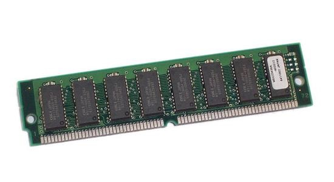
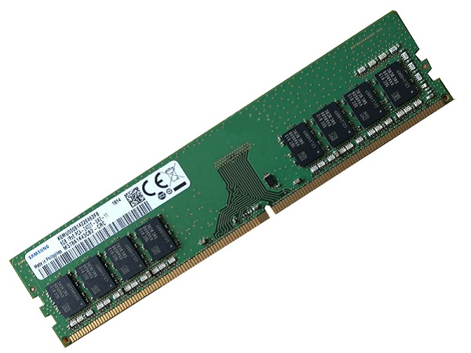

Main Memory (RAM)
- Referred to as RAM (Random Access Memory)
- A collection of integrated circuits (chips)
- Considered the “primary” storage for the CPU
- Temporary storage for data and programs that are being accessed by the CPU
- Volatile memory: contents are erased when the computer is switched off (or when power is lost)
Why use main memory?
Did you ever wonder why games take time to load? That is the time it takes to copy all the files of the game from the storage device (long-term memory) into the working memory of the main memory, which the CPU can access much faster and much more easily.
| RAM |
12,800 MB/s |
| SSD |
456 MB/s |
More RAM means more capacity to hold and process large programs and files. The maximum amount installed is limited by the motherboard and the operating system.
A short history
- Early computers had RAM installed on the motherboard as individual chips. These were difficult to install and often became loose.
- Designers then created memory modules: special circuit boards on which the memory chips are soldered.
- Modules attach to the motherboard through memory slots, so memory can be added or replaced easily.
Main Memory Features
Serial Presence Detect (SPD)
How can we get all the specs of the currently installed RAM sticks? Each RAM stick includes an SPD chip that stores detailed information about the memory, such as speed, size, manufacturer, and timings. A tool like CPU-Z can read the SPD chip, so you can view all the RAM specifications without physically opening your computer.
1- Data rate 🚀
SDRAM
- The original main memory was the Synchronous Dynamic Random Access Memory (SDRAM)
- It is synchronized with the motherboard speed
- For a 32-bit bus, if the motherboard runs at 100 MHz, the SDRAM speed was also 100 MHz × 32 bits of data sent/received
DDR SDRAM
- The first leap in RAM technology was Double Data Rate RAM
- For every tick of the motherboard clock, DDR sends/receives 2 bits of information instead of just 1
- This “doubles” the speed: 2 × 100 MHz × 32 bits
How can we tell the generations apart? By the number of pins and the position of the notch.
| SDRAM |
168 |
2 |
100 MHz |
SD-100 |
PC-800 |
| DDR |
184 |
1 |
100 MHz |
DDR-200 |
PC-1600 |
| DDR2 |
240 |
1 |
100 MHz |
DDR2-400 |
PC2-3200 |
| DDR3 |
240 |
1 |
100 MHz |
DDR3-800 |
PC3-6400 |
| DDR4 |
288 |
1 |
100 MHz |
DDR4-1600 |
PC4-12800 |
| DDR5 |
288 |
1 |
100 MHz |
DDR5-3200 |
PC5-25600 |
The “PC” number is the bandwidth in MB/s: it equals the transfer rate multiplied by 8 bytes (a 64-bit module). For example, DDR4-1600 × 8 = PC4-12800.
DDR2 and DDR3 both have 240 pins, so the notch position is what keeps you from installing the wrong one.
Electrical Pins Configuration ⚡
| Image |
 |
 |
| Era |
Older type of memory module. Common in early computers (e.g. Pentium I) |
Modern type used in most computers today |
| Contacts |
One set of electrical contacts. Both sides of the stick are connected to the same circuit |
Separate electrical contacts on each side of the module |
| Chips |
A single row of memory chips |
Can hold chips on both sides, effectively doubling capacity (e.g. 2 GB → 4 GB) |
| Data path |
32-bit |
64-bit, leading to faster performance |
SO-DIMM modules are smaller RAM sticks used in laptops.
2- RAM capacity 📦
- Every stick of RAM has a capacity (in GB), which is the amount of information the RAM can store
- The capacity depends on the size of the chips (1 Gb, 4 Gb, 16 Gb, etc.)
- The capacity also depends on whether the RAM is SIMM or DIMM
3- RAM channels 📺
- Most motherboards have a limited number of RAM slots, usually 2 or 4
- RAM is typically sold in pairs of sticks to take advantage of dual-channel performance
- With dual-channel memory architecture, the CPU can access data from two RAM sticks at the same time instead of just one. This doubles the data bandwidth, making the system faster and more efficient.
Motherboards with four slots usually label them A1, A2, B1, B2:
- Slots A1 and A2 belong to one memory channel
- Slots B1 and B2 belong to the second channel
- To activate dual channel, install DIMM sticks in matching colored or labeled slots, e.g. A2 and B2
- For the best performance, the RAM sticks in the same channel should be identical: same size, speed, and brand if possible
Source of images: CompuRAM
What happens if RAM is installed incorrectly?
If you put both sticks in the same channel (e.g. A1 and A2), the motherboard treats them as single-channel memory.
- The system can only access one stick at a time
- Memory bandwidth is cut in half
- Overall performance drops (especially noticeable in gaming, video editing, or multitasking)
The PC still works, but you won’t be using it to its best capacity.
4- Memory redundancy and error checking 🚨
Memory errors happen when data is not stored or retrieved correctly from the RAM chips. Computers use different types of memory to detect and correct them.
| Other name |
|
True parity |
Error checking and correcting |
| Detects errors? |
No |
Yes |
Yes (multiple-bit errors) |
| Corrects errors? |
No |
No |
Yes (1-bit errors) |
| How it works |
Nothing extra. If an error occurs, the OS has no way of knowing and data can be corrupted without warning |
Extra chips act as parity chips. A memory error is detected and the OS is informed |
Detects multiple-bit errors and corrects 1-bit errors automatically |
| Cost |
Cheapest, works fine for most applications |
Middle |
Most expensive |
5- RAM latency ⏱️
Latency is the small delay that occurs when the memory controller begins accessing a line of data from RAM. RAM with lower latency responds faster, while RAM with higher latency takes slightly longer to deliver data.
Latency is a general concept
In physics and engineering, latency is a time delay between the cause and the effect of some physical change in a system. It is a consequence of the limited velocity at which any physical interaction can propagate.
Remember from Class 2: CRT monitors have lower latency than LCD/LED monitors because electrons travel faster in a vacuum than through digital circuits.